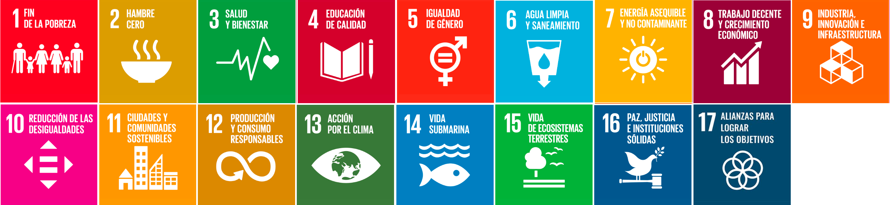

Relación con los ODS y Retos del siglo XXI
Relación con ODS
El currículo de Cultura Audiovisual en Asturias establece que la materia debe garantizar aprendizajes acordes con los ODS (Objetivos de Desarrollo Sostenible) de la Agenda 2030. De acuerdo con el Decreto 60/2022 del Principado de Asturias. Para esta situación de aprendizaje, se vincula con los ODS:

- ODS 4: Educación de calidad: La actividad promueve la alfabetización mediática, permitiendo que el alumnado pase de ser un espectador pasivo a un creador con herramientas para el procesamiento crítico de la información.
- ODS 5: Igualdad de género: Se analizan los estereotipos dentro de la ficción y se promueve un lenguaje inclusivo y respetuoso en los doblajes y guiones.
- ODS 10: Reduccción de las desigualdades: El carácter colaborativo del aprendizaje proyectual propuesto garantiza los valores de igualdad de trato y no discriminación.
Relación con retos del siglo XXI
La situación de aprendizaje propuesta responde a los retos y desafíos globales que el alumnado debe afrontar para la adquisición de una formación integral:
- Alfabetización mediática e informacional: En un mundo donde el audiovisual y la tecnología es el principal transmisor de ideas, el alumnado asume el reto de comprender su sintaxis y mensajes para evitar la manipulación y hace un uso crítico de los medios audiovisuales.
- Gestión ética de la cultura digital: El uso de aplicaciones de edición y su difusión requiere que el alumnado aprenda a actuar con rigor ético y formal, respetando siempre la propiedad intelectual.
- Aceptación de la incertidumbre y el error: El error debe verse como oportunidad de mejora. Al identificar las "barreras encontradas" en su infografía, el alumnado trabaja la resiliencia y la autoconfianza.
- Competencia en comunicación ecosocial: Al diseñar producciones para un público, el alumnado evalúa el impacto de sus mensajes y desarrolla una conciencia cívica responsable y democrática.